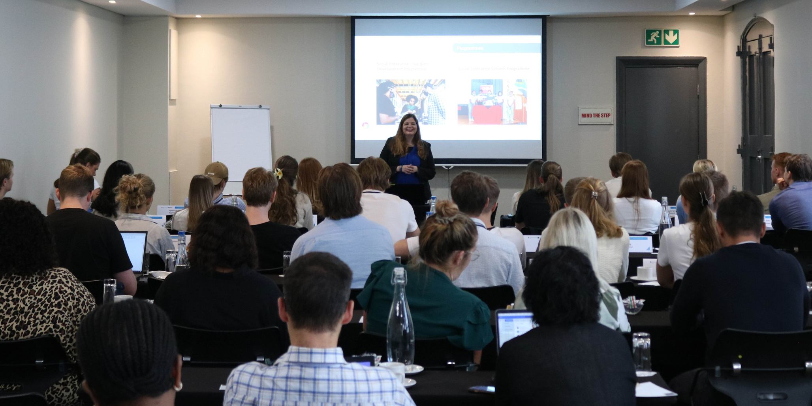
Welcome Session at University
A warm South African welcome at Stellenbosch University sets the tone for the programme, with introductions to the host social enterprises and small businesses. The practical experience is about to begin.

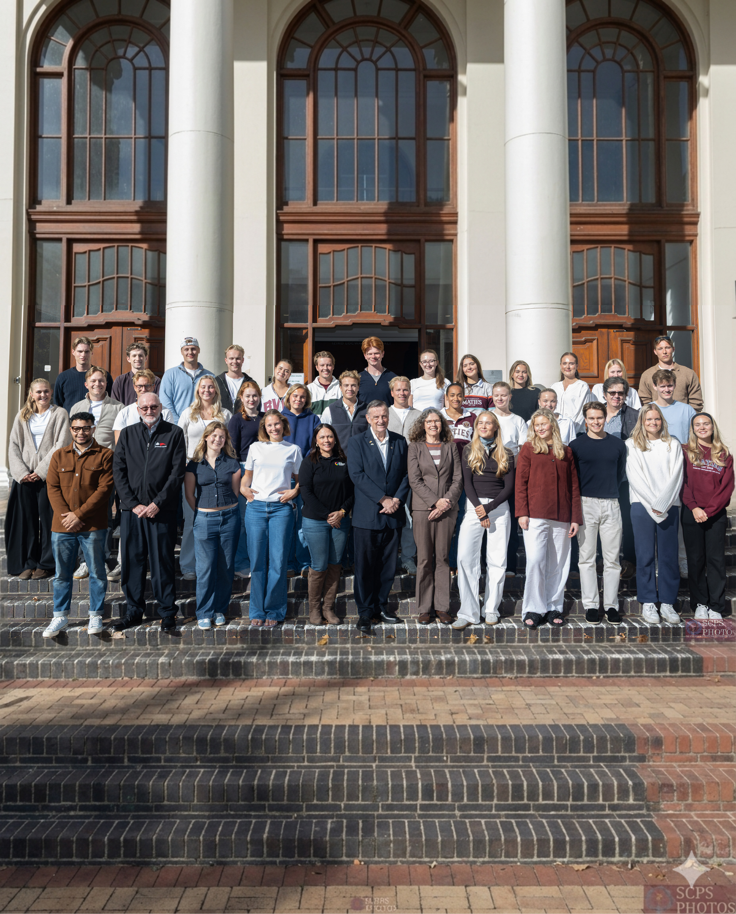
About the programme
This prestigious programme blends academic insight with real-world social impact and local business experience in Cape Town, South Africa.
Students are placed as interns with local social businesses, where they gain practical experience. They become part of a social impact team, develop new skills and contribute directly to the communities their host organisations serve.
Programme highlights

A warm South African welcome at Stellenbosch University sets the tone for the programme, with introductions to the host social enterprises and small businesses. The practical experience is about to begin.
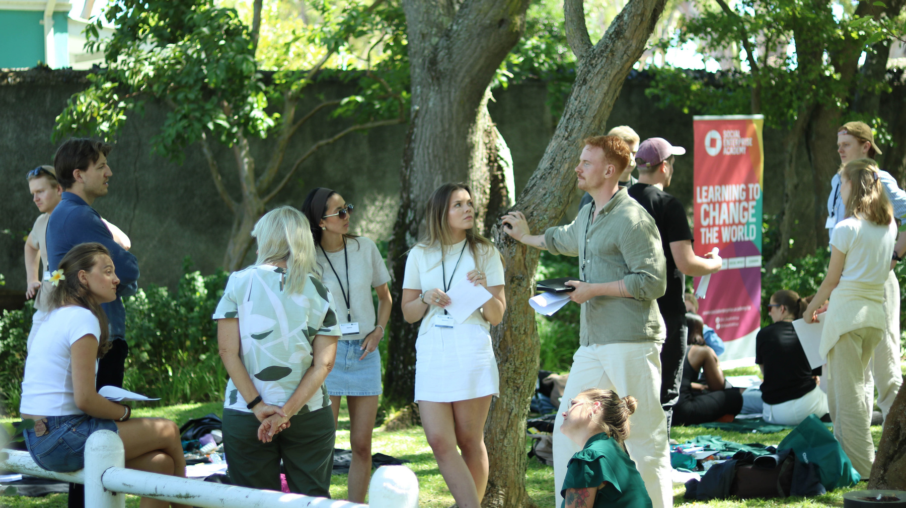
A fun, interactive session in a garden setting explores the impact strategies of the social enterprise hosts. Students gain an in-depth view of the root causes their host organisations address on the ground in Cape Town.
Social enterprise tour
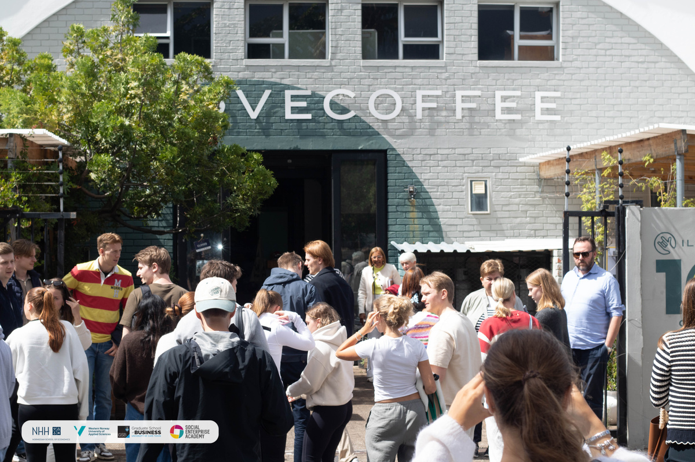
Empowering deaf youth through hospitality training as chefs or baristas.
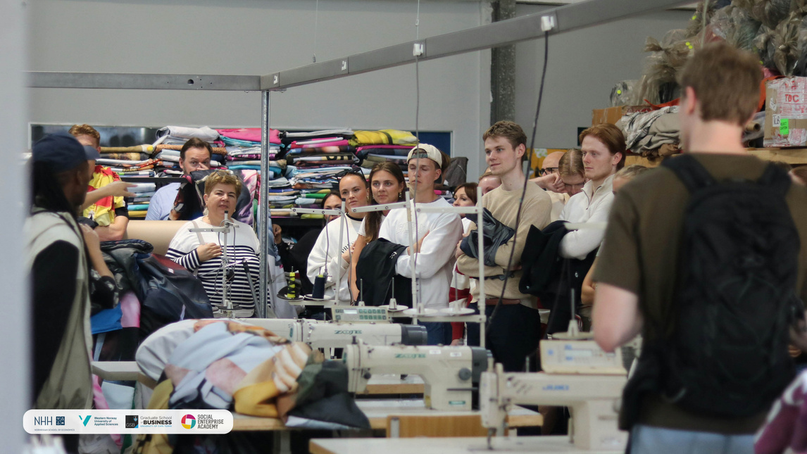
Tackling homelessness through skills-based rehabilitation and work opportunities.
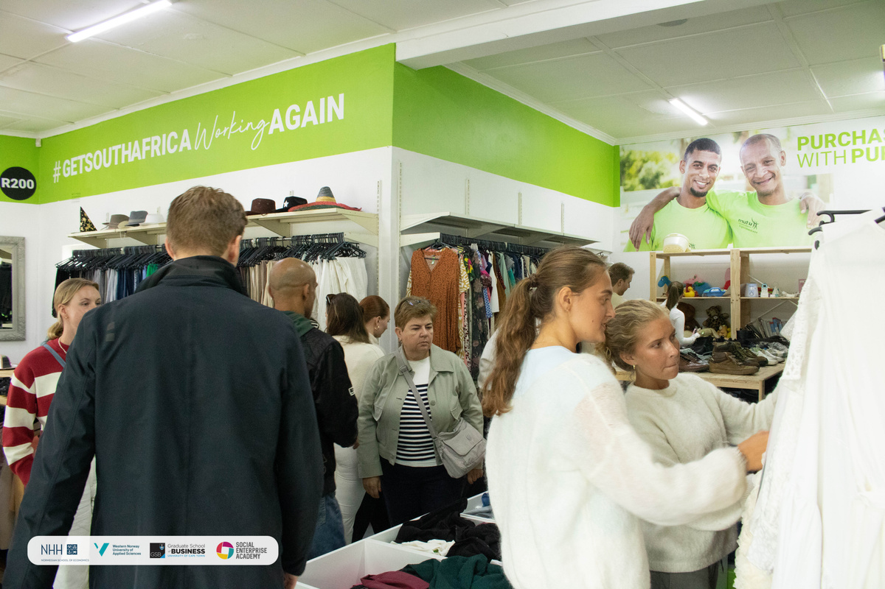
Enabling families to escape poverty through two years of small-business support.
Programme outline
Shortly after arriving in South Africa, students visit a range of social enterprises. An “Introducing Social Enterprise” workshop explores social enterprise business models and core characteristics, as well as the dynamics of social entrepreneurship in the South African context.
The Impact Measurement Workshop toolkit includes:
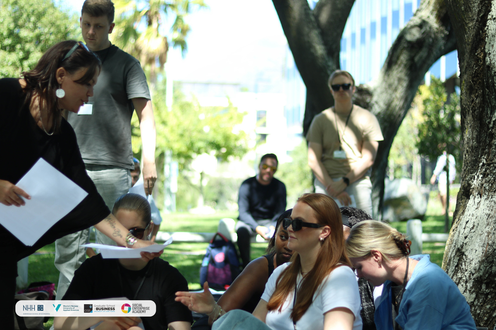
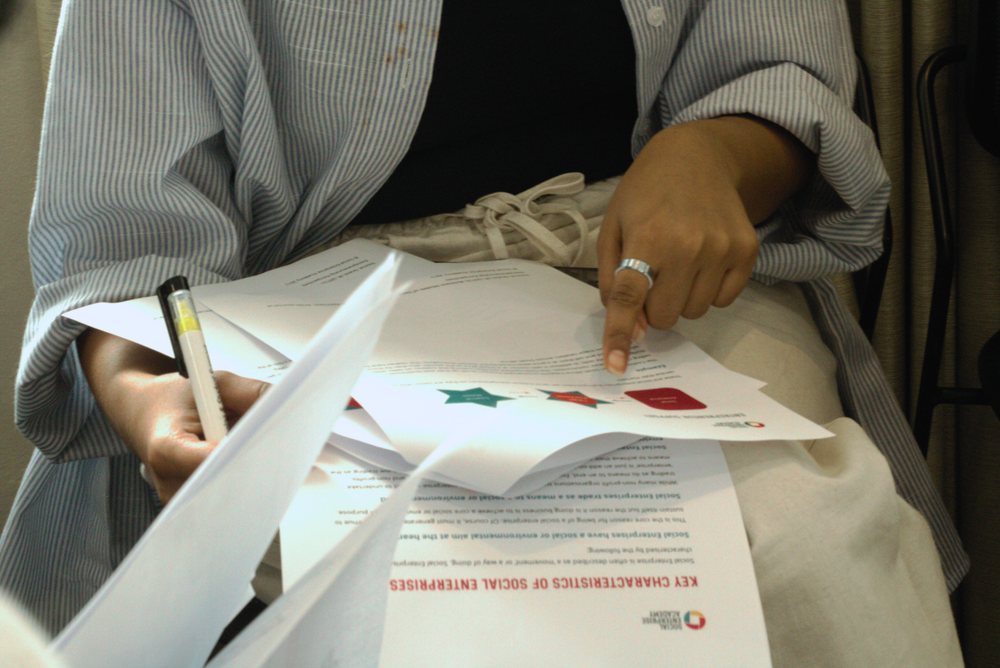
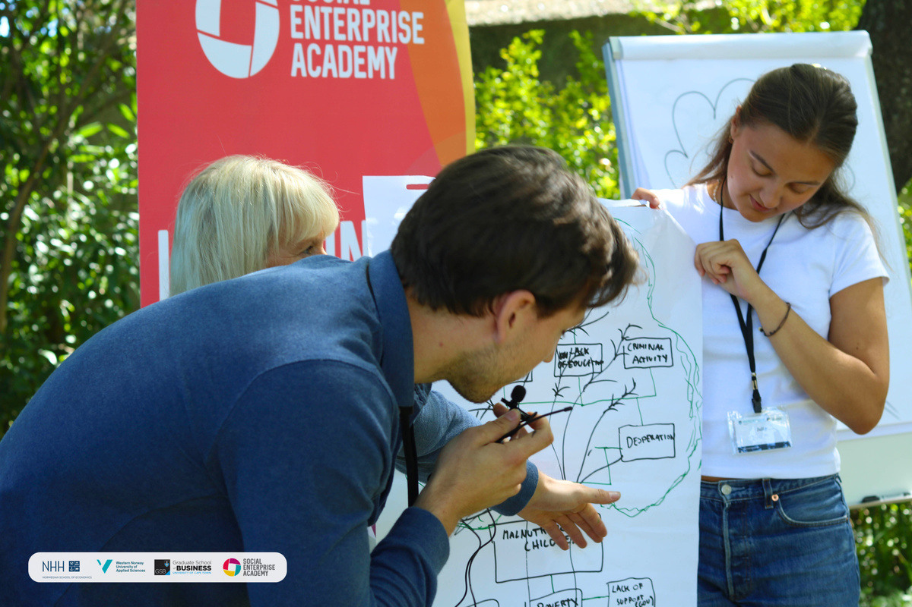
What our students say
“The three months I spent in South Africa were the best three months of my life. I would do it again in a heartbeat.”Frida Olsen, former internship studentEmail us
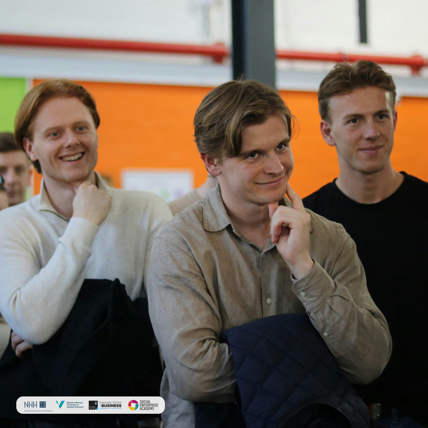
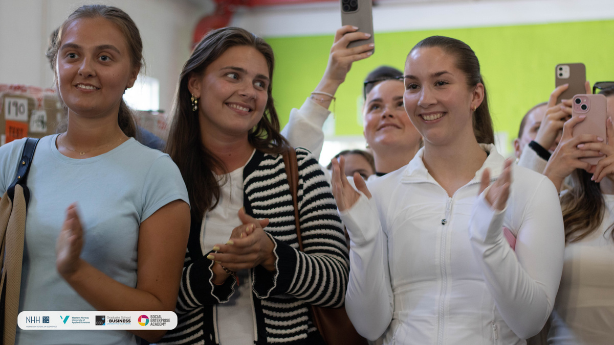
Find out more
If you are interested in the International Student Internship Programme—focused on social innovation—we invite you to contact us directly. We look forward to welcoming you into our community of social innovators and entrepreneurs.
Contact us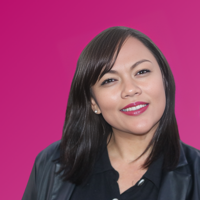